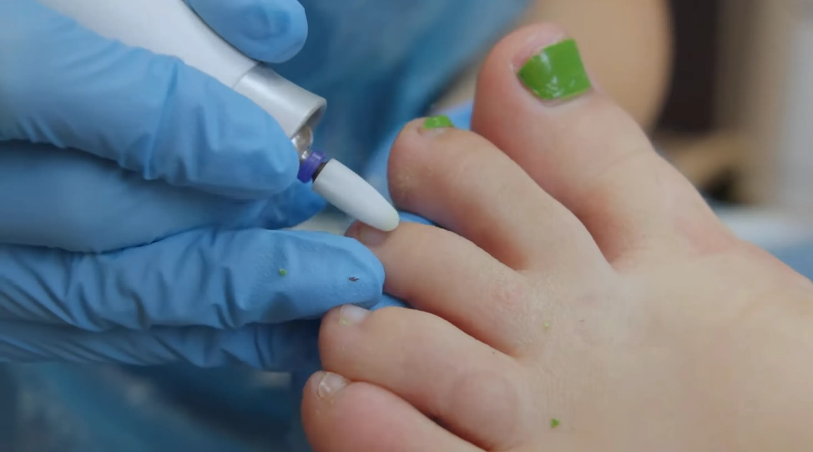

Let’s turn your daily pain points into one-click systems.
Totally hear you on the Dataplayer piece. If MedTech can give you the same kind of scorecard and reporting, but also let you go deeper into treatment types, patient lists, tagging and follow-up actions, that is exactly the sort of thing we should be building.
Think of every job you do day to day that feels clunky, manual, repetitive, hard to report on, or hard to organise. Even if it sounds a bit wild, send it over. If the data exists and we can access it, there is a good chance we can build something that makes it easier.
Reports without the faff
No more downloading the whole database just to answer one question.
Instead of pulling everything from Cliniko and filtering manually, we can look at building reports where you choose the treatment, date range, clinic, practitioner, patient group or follow-up status.
Example
SWIFT audit in a few clicks.
You could ask for all patients who had SWIFT in the last six months, check who had follow-ups, see outcomes, and identify anyone who does not have the next appointment booked.
Dashboard to action
Filter, tag and communicate.
The exciting bit is not just seeing the list. The exciting bit is sending that list into MedTech as a tag group, so you can email, SMS or follow up with the right patients straight away.
How it could work
You search for what you need, then MedTech does the organising.
Filter patients by treatment type, appointment history, clinic, practitioner, date range or outcome.
Create a tagged patient list inside MedTech from the dashboard.
Send a communication or create a task without manually building the list.
If the wrong group is tagged, we can also build a safe way to reverse it and untag them.
Existing automations
We are not replacing what already works.
Reviews, reactivation and follow-up are already happening in MedTech. The dashboard should show whether those systems are paying off and where a human still needs to step in.
New question
Are conversations turning into booked appointments?
We can map MedTech conversations, voicemails, missed calls and chat replies against Cliniko bookings, so Alice can see which contacts became appointments, which stalled, and which need a follow-up task.
Pull treatment reports by type, date range, clinic and follow-up status.Spot high-value treatments and where follow-up is being missed.

Create patient lists and MedTech tags from dashboard filters.What I need from you
Be as wildly specific as you can.
Send me the things you wish you could click once and see. The things that take too long. The things that make you think, “surely there must be a better way to do this.” Do not worry about whether it sounds too technical or too ambitious.
Patient lists
Who do you wish you could find instantly?
Treatment audits
What outcomes, gaps or follow-ups do you need to check?
Daily tasks
What do you or the team repeat that could be organised better?
Conversations
Which chats, voicemails or missed calls need a booking outcome checked?
Ideal world
What would make your life easier as practice manager?
Idea nudges
Click anything that sparks a thought.
These are just prompts. Use them, ignore them, or add something much more specific.
Send your ideas back
Alice’s pain point list
Add anything here: daily frustrations, dream reports, patient lists, documents you want checked, or anything you wish MedTech could do. When you press send, it will open an email to Sarah with your notes ready to go.
I have sent Hiren a proposal around the dashboard idea because I would love to get Flawless Feet really flying with MedTech. If we can make this work beautifully for you, it could become a brilliant example for other clinics too.